今日课表
当天课程一览，下节课卡片显示起止时间与剩余时间，「正在上课」自动高亮，已结束的课程变淡沉底。
- 下节课卡可设为「自动下一次 / 已结束变淡 / 课后消失」
- 今日课程时间轴 + 今日待办 + 明日预告同屏
「上课」是一款面向中国高校的开源课表 App。内置 1700+ 所高校教务索引，一键导入课程与作息； 三套主题、多作息方案、情侣课表、桌面小组件与上课免打扰，从开学第一天一直用到期末。
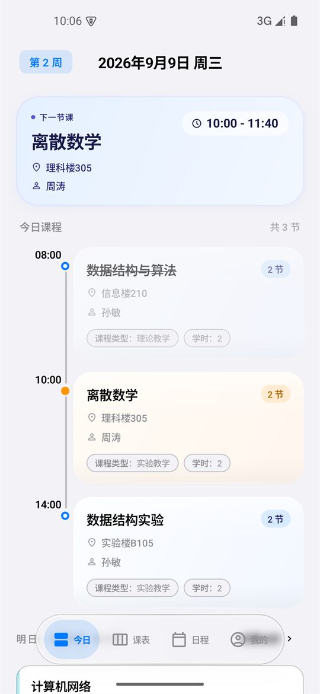
从「今天上什么课」到「这学期什么时候放假」，围绕真实的中国高校场景打磨。 不做花哨的功能堆砌，只把每天都会用到的那几件事做到位。
当天课程一览，下节课卡片显示起止时间与剩余时间，「正在上课」自动高亮，已结束的课程变淡沉底。
周一至周日网格，左侧节次与时间段对齐课程彩块。左右滑动切换周次，长按课程块即可调整位置与高度。
A-302 不会被拆开日期轴 + 整月日历，课程与待办、活动、考试、作业同屏混排，分类与完成状态一目了然。
离线内置 1700+ 所高校索引，选学校、登录、选学期，课程与作息自动落到课表里，无需联网即可完成。
TA 的课表是一份独立课表：独立课程、独立作息、独立学期，可单独编辑也可与本人课表叠加同显。
一张课表可保存多套上课时间，按「月-日」生效区间自动切换，夏令时与冬令时不再需要手动改表。
多种尺寸与样式的桌面、锁屏小组件，直出「今天 / 明天」课程概览与当日课程数，点按直达课程详情。
课前自动提醒；上课期间自动切换勿扰或静音，下课自动恢复。内置全年节假日数据，假期不打扰。
JSON 完整备份（含多方案作息与情侣课表）、ICS 日历导出、系统日历同步，以及 WebDAV 自托管云备份。
新课表最麻烦的一步，往往是照着教务系统一条条手抄。 「上课」把这件事做成了一次点击：适配逻辑全部内置离线，导入过程可预览、可编辑、可撤销。
1700+ 所高校，按本科 / 专科、研究生、通用工具分组，配 A–Z 字母索引，几千所学校也能秒定位。
超星、正方、URP、青果、强智、金智、南软等主流教务系统统一处理，并自动修复桌面 UA 与 1280px 视口，解决部分学校手机端打不开课表的问题。
160+ 所学校配有专属适配脚本，处理特殊页面结构与登录流程——强制电脑版、WebVPN 双入口、API 直取等。
适配资源支持远程更新，逐文件 sha256 校验；校验失败自动回退内置资源，不会影响正常导入。
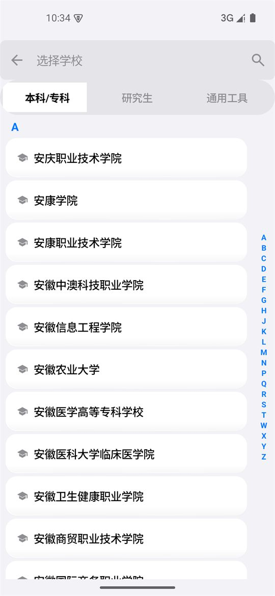
课程名、地点、教师要同时塞进一个可能只有两指宽的色块里。 下面这块课表用演示数据渲染，可以横向拖动、悬停查看——它展示的正是课程块在同一行里的真实对齐方式。
课程块文字随实际可用宽度动态缩放：窄块不裁切，宽块更清晰，长课程名如「毛泽东思想和中国特色社会主义理论体系概论」也能完整落格。
优先在 @、-、中英文括号等分隔符处断行，避免 A-302 被拆成 A-3 / 02 这类读不出来的结果。
同名课次统一颜色，不同课程优先分配未被占用的颜色；课程配色可单独成页管理，也能一键重置。
每套主题同时决定配色、课表样式与专属动效语言——不是换一层皮，而是换一种手感。 另有跟随系统 / 浅色 / 深色三种模式，以及基于壁纸的动态取色（Android 12+）。
暖砂纸底色配赤陶主色，衬线标题，纸页层叠式的转场。安静的阅读感，适合在自习室盯一下午。
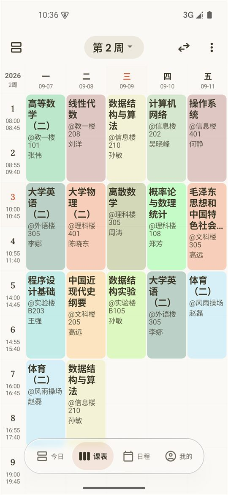
iOS 26 Liquid Glass 质感，systemBlue 主色，物理弹簧动效。信息密度最高，一眼扫完全周。
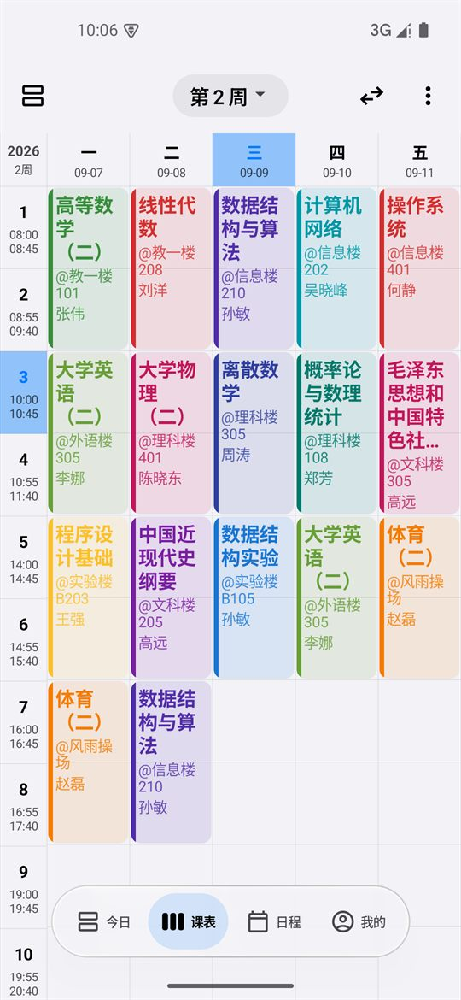
柔和晕染渐变与雾紫配色，漫射柔光，零过冲缓动。视觉压力最小的一套，适合晚上看。
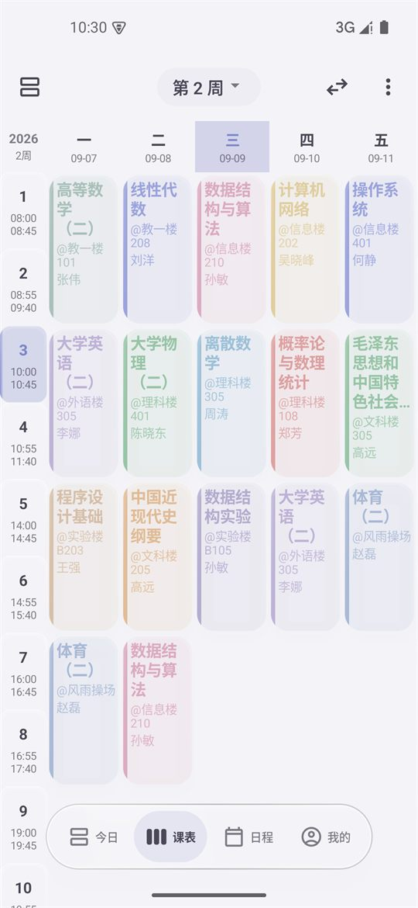
界面、桌面小组件、通知与课程块配色一并转深，夜间翻课表不刺眼。
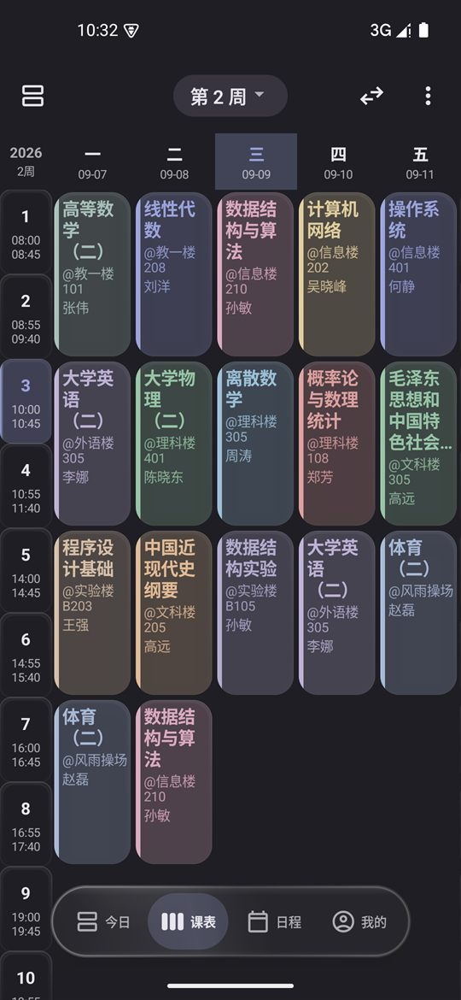
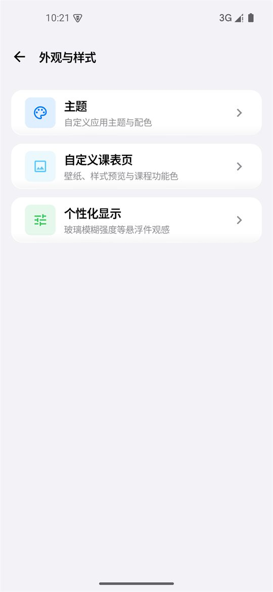
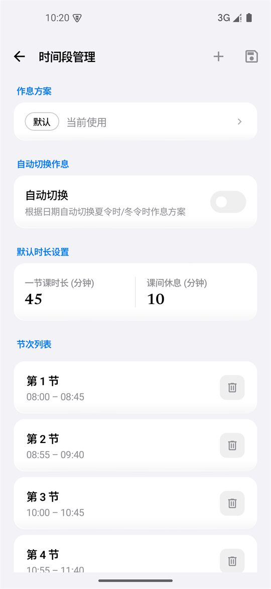
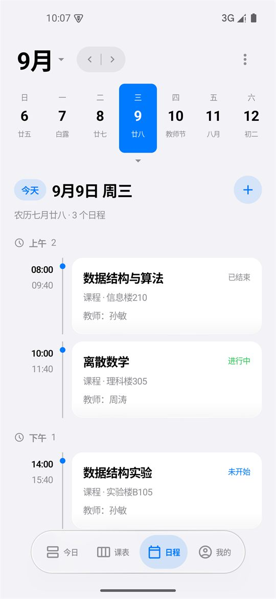
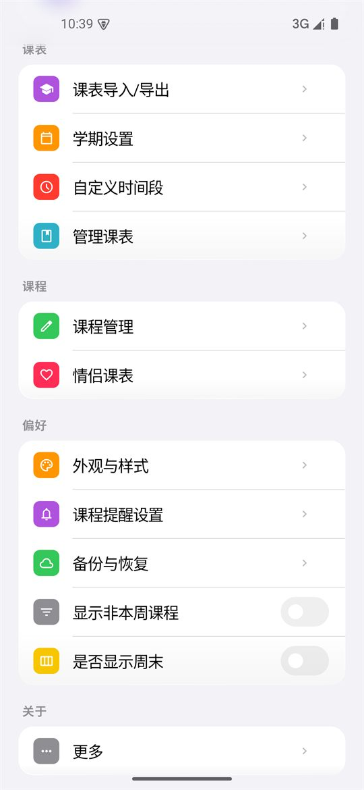
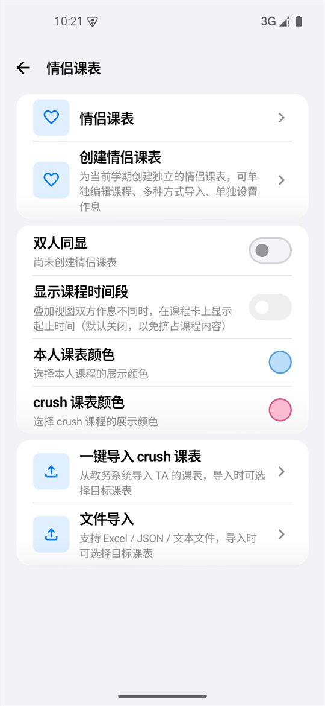
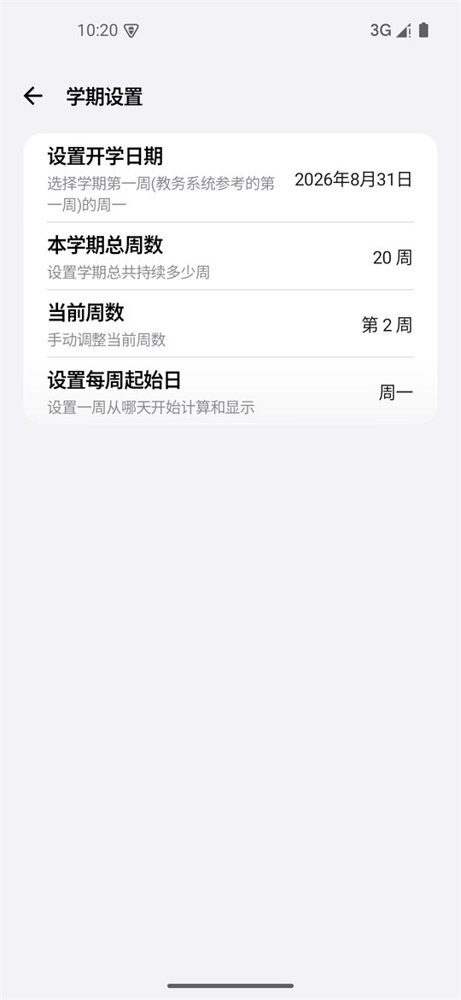
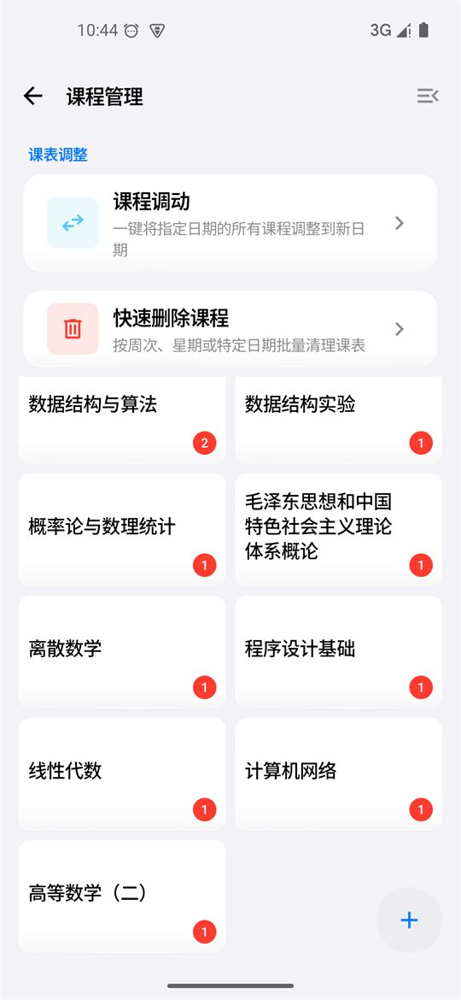
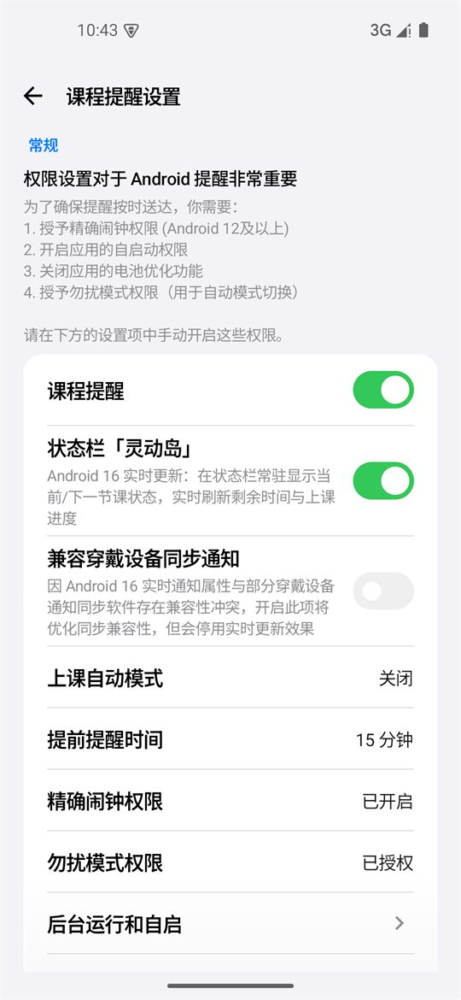
课表、待办与设置全部保存在本机数据库。App 不需要账号、不接入广告或统计 SDK；云备份走你自己的 WebDAV，服务端由你选择。
全部源码公开在 GitHub，可自行审阅、编译与二次开发。基于 Compose Multiplatform 构建，Android 为正式版本，Desktop 与 iOS 正在开发。
欢迎在 GitHub Issues 反馈问题或提需求；如果你的学校教务还没被适配，发一封邮件说明学校与教务系统类型即可，作者会跟进对接。
当前版本 v3.56.5（versionCode 221）。 安装包统一通过夸克网盘分发，三份按 CPU 架构拆分的 APK 都在同一个分享里； 不确定选哪个就取 arm64-v8a——近几年的机型基本都是它。
~9a263aTFyF~:/
项目迭代节奏很密——修复、性能、交互细节每周都在推进，完整记录见更新日志。
先试试「通用适配器」——超星、正方、URP、青果、强智、金智、南软这七类覆盖了绝大多数教务系统，导入入口里按系统类型选择即可。
如果仍失败，可以发邮件到 hhixingchen520@163.com 说明学校名称与教务系统类型，或直接在 GitHub 提 Issue。仓库的适配脚本是开放的，也欢迎自行补充后提交。
不会。课表、待办与个性化设置保存在本机数据库，App 不要求注册账号，也不集成广告或用户行为统计 SDK。
唯一的联网场景是「教务导入」（访问你自己学校的教务系统）与「适配资源更新」，以及你在设置里主动开启的 WebDAV 云备份——备份目标由你自行填写。
三种方式任选：导出 JSON 完整备份（含多方案作息与情侣课表）后在新设备导入；把课表导出为 ICS 并同步到系统日历；或在设置里配置 WebDAV 云备份，在新设备直接恢复。
拆包后每个架构只带自己需要的原生库，安装包从十几兆降到 5.6 MB 左右，装机更快也更省空间。
不确定机型架构时选 arm64-v8a：2017 年之后上市的 Android 手机基本都是 64 位 ARM。安装后系统会自动选择匹配的版本。
项目基于 Compose Multiplatform 构建，Android 是当前的正式版本，Desktop 与 iOS 仍在开发中，尚未发布可安装包。进度会同步更新在 GitHub 仓库里。
免费，且不会加入广告。项目以 Apache-2.0 协议开源，即使有一天官方版本改变策略，任何人都可以基于已公开的源码继续维护与分发。